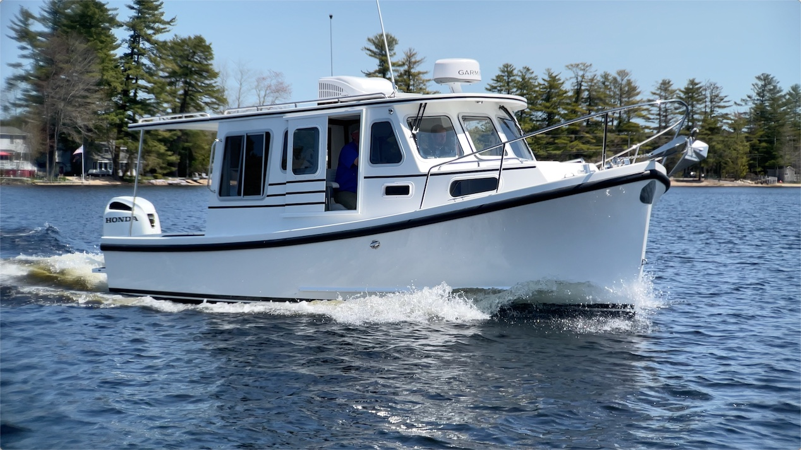

Rosborough 246 Yarmouth
From 1987
The Rosborough RF-246 Yarmouth / current cruising layout is a Nova Scotia-designed compact semi-displacement cruiser/workboat derivative built around an 8-foot-6-inch trailerable beam. The RF-246 has appeared with materially different interior layouts and propulsion packages over its long production history, so exact engine, tank and accommodation details must be matched to the individual build.

- Length
- 25 ft
- Beam
- 8.5 ft
- Draft
- 1.5 ft
- Hull behaviour
- Semi-Displacement
- Fuel
- Gasoline
- Propulsion
- Outboard
- Engine configuration
- Single outboard, typically 150–250 hp
- Boat family
- Downeast
- Construction
- Hand-laid fiberglass hull; solid fiberglass except transom, with one-piece stringer grid and foam flotation on current Eastern-built generation
Best for
- Couples wanting a compact all-weather coastal cruiser
- Owners needing trailerable beam with more displacement and workboat character than a light pilothouse boat
- Cruising, fishing or mixed-use operation
Trade-offs
- Narrow beam limits side-deck and interior volume
- Long production history creates substantial variation in engines, tanks and layouts
- Utilitarian finish and workboat ergonomics may feel basic compared with modern cruisers
Known concerns
- No model-specific concern has been promoted to B-Atlas’s evidence threshold. This does not mean the model has no age-, condition- or hull-specific risks.
Inspection focus
- Confirm exact builder, year, layout and propulsion package
- Inspect hull/deck structure, wheelhouse joints and previous hardware penetrations
- Inspect engine/outboard installation, fuel system and steering
- Verify actual tank capacities, loaded weight and trailer suitability
Continue researching
Related boat models
25 ft · Semi-Displacement
24.5 ft · Semi-Displacement
25.92 ft · Semi-Displacement
26 ft · Semi-Displacement
26.5 ft · Semi-Displacement
26.9 ft · Semi-Displacement
About this record
B-Atlas preserves uncertainty: missing information remains unknown rather than being treated as a negative. Specifications and guidance describe the model record; individual boats can differ by year, equipment, refit and condition.